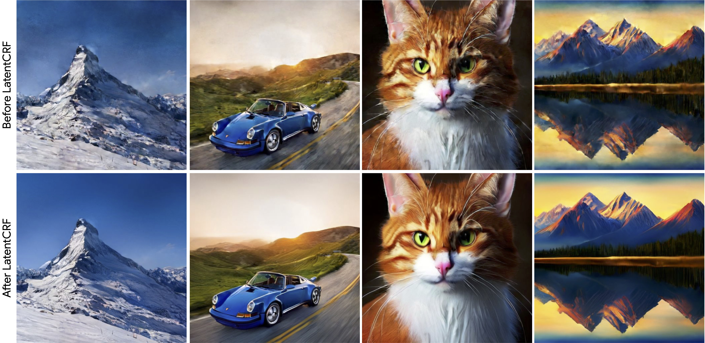
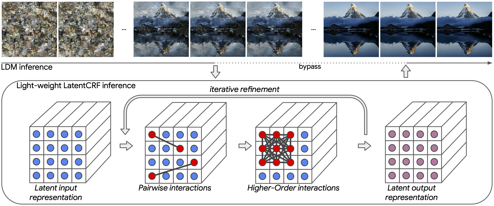
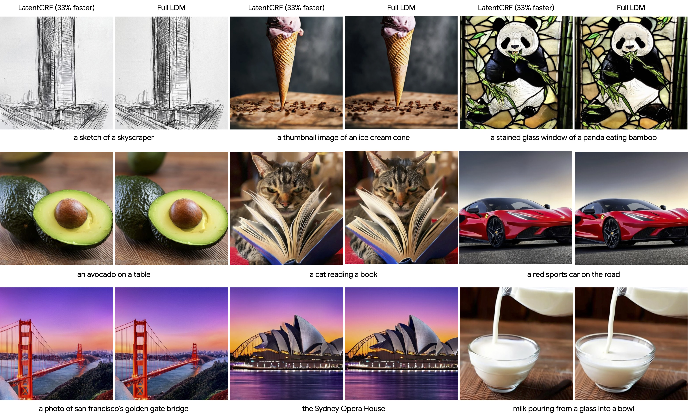
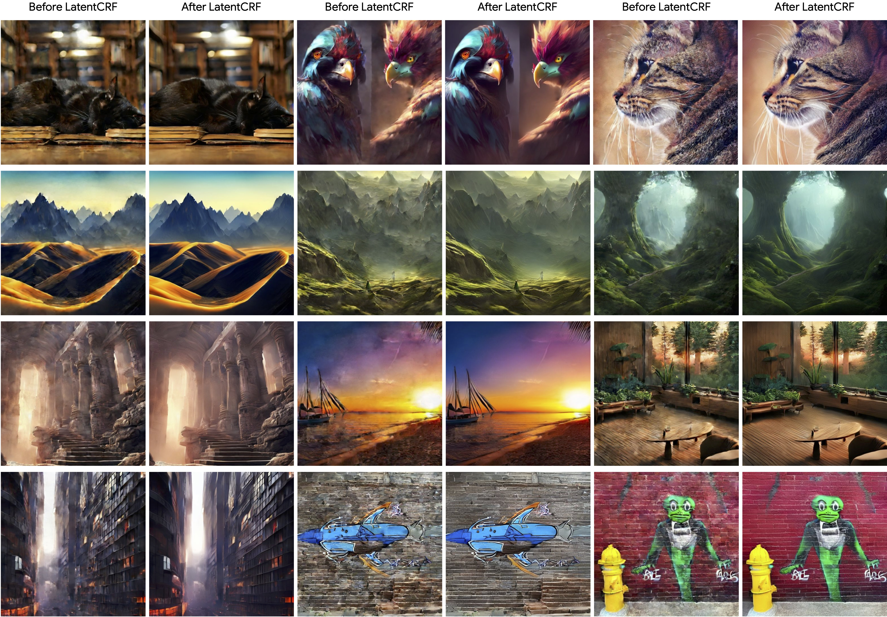

|
|
|
|
|
|
|
|
|
|
|
|

|
|
LatentCRF replaces multiple LDM reverse diffusion iterations with a lightweight conditional
random field (CRF) module containing 10 times less parameters. The overall pipeline
achieves a 33% inference speed-up. The LatentCRF architecture contains strong inductive biases
motivated by natural image priors, which we attribute to its strong performance with lesser
parameters.
|
|
Latent Diffusion Models (LDMs) produce high-quality, photo-realistic images, however, the latency
incurred by multiple costly inference iterations can restrict their applicability. We introduce
LatentCRF, a continuous Conditional Random Field (CRF) model, implemented as a neural network layer,
that models the spatial and semantic relationships among the latent vectors in the LDM. By replacing
some of the computationally-intensive LDM inference iterations with our lightweight LatentCRF, we
achieve a superior balance between quality, speed and diversity. We increase inference efficiency by
33% with no loss in image quality or diversity compared to the full LDM. LatentCRF is an easy
add-on, which does not require modifying the LDM.
|
|
We speed up reverse diffusion using a continuous Conditional Random Field (CRF) model formulated as
a trainable neural network layer. Our continuous CRF layer is an order of magnitude less expensive
than the LDM U-Net. Our method is easy to apply, in that it can be trained with relatively few
resources, and does not require modifying the LDM. Moreover, it can be combined with
other efficiency improving methods like alternate samplers or model compression. In fact, we
apply LatentCRF over a DDIM scheduler based LDM.
|
|

|
|
As illustrated in the figure above, LatentCRF replaces several LDM reverse diffusion iterations
a lightweight CRF module. While the CRF probabilistic inference involves iterative refinements,
this is limited to under 5 iterations. The entire probabilistic inference process is still much
faster than several LDM reverse diffusion iterations.
The following video describes our methodology in more detail.
|
|
We refer the reader to
our paper
for further details on our CRF continuous space formulation, energy functions, and training procedure.
|
Qualitative Results |
LatentCRF retains Full-LDM Quality |
|

|
Effect of LatentCRF Inference |
|

|
Diversity of Generated Images |
|
For a common textual prompt, multiple images are generated with different starting noise values.
A common noise tensor is used for all different methods. For the two example images below
(use sliders to navigate), we use the following two textual prompts respectively:
|
Conclusion |
We propose LatentCRF to learn spatial and semantic relationships among the latent feature vectors
used for image generation. By replacing LDM iterations with LatentCRF we achieve a speedup of 33%
with virtually no losses in image quality or diversity.
By carefully analyzing LDM inference iterations, we identified an opportunity to replace costly LDM
iterations with a lightweight CRF module. The inductive biases which we baked into the CRF help it
learn to mimic multiple iterations of the LDMs U-Net, using an order of magnitude fewer parameters.
Even though our method achieves better FID scores than the LDM model, we observe some loss patterns
where LatentCRF produces artifacts, such as breaking lines in man-made structures. On the other
hand, we also notice several instances of LatentCRF generating more natural looking images compared
to the Full-LDM.
|
@inproceedings{Ranasinghe2024LatentCRF,
title={LatentCRF: Continuous CRF for Efficient Latent Diffusion},
author={Kanchana Ranasinghe and Sadeep Jayasumana and Andreas Veit and Ayan Chakrabarti and Daniel Glasner and Michael S. Ryoo and Srikumar Ramalingam and Sanjiv Kumar},
year={2024}
}